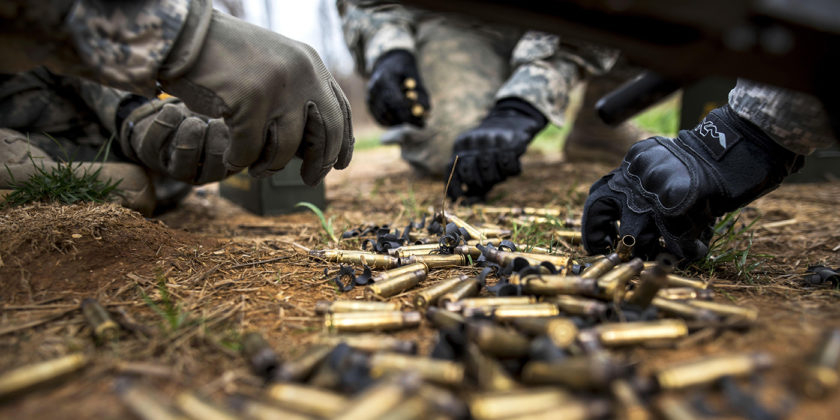

Not so long ago, before computers became what they are today, I had a fond interest in technology to a much greater extent than today. However that interest never really left me. I held on to a Compaq with windows 98 on it for far longer than I probably should have. It was not until it got the dreaded blue screen of death that it finally disappeared. Before that however, I would periodically open the command prompt and try doing anything. Mostly it consisted of typing "help" to see what I could catch onto, even if it was nothing. Then I discovered hacking, though I do not really remember how it came about. At the time though, hacking was a very much underground thing, used to do bad things but thats what caught my attention and excited me about it. All things bad and fun! Am I right? Nothing ever came to fruition through that nefarious interest but it was still something I wanted to explore. The only difference is that I know that to be a hacker, you have to know coding.
In the military, communication is key! An key that I sometimes forget is not as big of a deal in the civilian world as I would like. Probably due to the fact that in the civilian world, the possibility of someone dying because of a communication error is way lower than in the military. That said, communication errors in the civilian world can cost learning experiences and job potentials. Which is almost what happened, and no doubt thanks to the militaries poor timing! About a month and a half into the Launchcode program, I had to attended annual training. This was noted and discussed with another key Launchcode person who just so happened to be close to my mom. While I was assured my military time would not be a hindrance, that is not exactly how it went. I informed my teaching folk that I would be leaving, but it did not get much higher than that. My second week in training I got an email saying if I did not show up I would be dropped. Unfortunately before my email reached the appropriate people, I had been dropped. Upon text messages to my mom, and contact with her friend, I received notice of my re-enrollment and an apology for the confusion. In the same instance, a demonstration of both poor and great communication had taken place. I am just glad it happened to work out.

the future